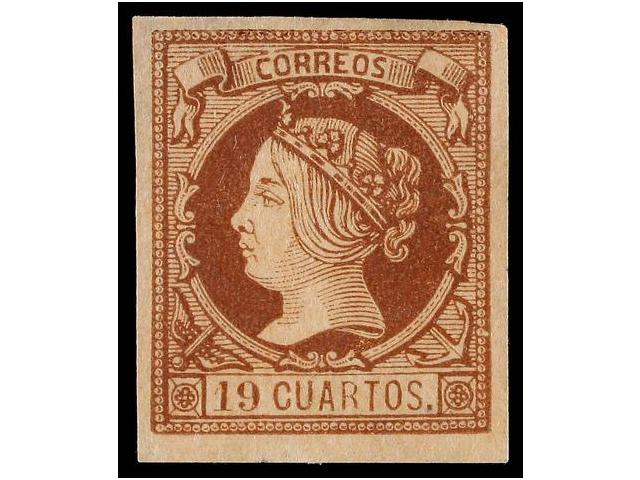
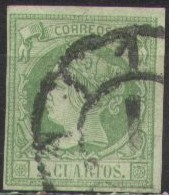
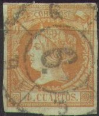
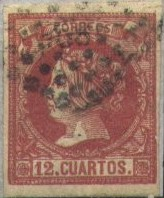
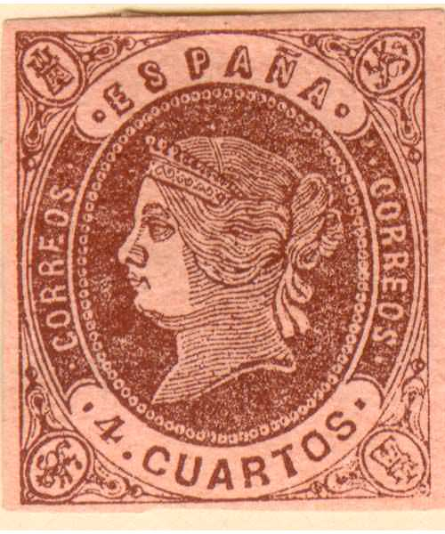
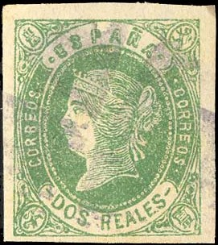
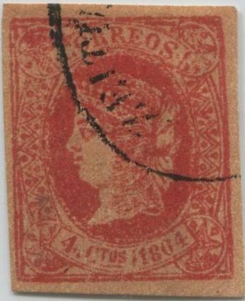
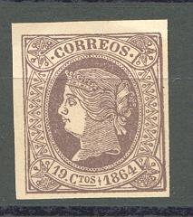

Certified genuine
Return To Catalogue - Queen Isabella, 1850-1859 - Spain 1865 Queen Isabella issue - Spain overview
Note: on my website many of the
pictures can not be seen! They are of course present in the
catalogue;
contact me if you want to purchase it.

Certified genuine



2 c green on green 4 c orange on green 12 c red on brown 19 c brown on red 1 r blue 2 r lilac
Value of the stamps |
|||
vc = very common c = common * = not so common ** = uncommon |
*** = very uncommon R = rare RR = very rare RRR = extremely rare |
||
| Value | Unused | Used | Remarks |
| 2 c | R | *** | |
| 4 c | *** | c | |
| 12 c | R | ** | |
| 19 c | RRR | RRR | |
| 1 r | R | *** | |
| 2 r | R | *** | |
Typical cancellations:



An essay of the 2 c in red?
For forgeries click here.
A similar stamp was issued for Spanish Antilles (1/4. Rl. Pta F. black).
2 Cs blue 4 Cs brown 12 Cs blue on red 19 Cs red 1 Rl brown 2 Rs green on red
For the specialist: the 4 Cs is the most common stamp, the 19 Cs the rarest.
Value of the stamps |
|||
vc = very common c = common * = not so common ** = uncommon |
*** = very uncommon R = rare RR = very rare RRR = extremely rare |
||
| Value | Unused | Used | Remarks |
| 2 c | *** | *** | |
| 4 c | * | c | |
| 12 c | *** | ** | |
| 19 c | RR | RR | |
| 1 r | *** | *** | |
| 2 r | *** | *** | |
Cancelled to order (sold to a stamp dealer): three horizontal bars:
Forgeries, examples:

Two different postal forgeries of the 4 c value. Note the shape
of the lion in the upper right hand corner.

The colour of the above stamp is wrong (red instead of blue) and
the number of pearls in the ellipse is much less than in the
genuine stamps. Also note the very strange cancel consisting of
some kind of square. I've also seen this forgery in the colour
light green with the same cancel.
Other forgeries:

Image obtained from the forgeries idenfication site of Bill
Claghorn: http://geocities.com/claghorn1p/


Two different forgeries of the 2 c value

(a forgery of the rare 19 c made by Segui)

Forgery of the 2 R stamp
2 c blue 4 c red on lilac 12 c green on lilac 19 c lilac 1 Rl brown on green 2 Rs blue
Value of the stamps |
|||
vc = very common c = common * = not so common ** = uncommon |
*** = very uncommon R = rare RR = very rare RRR = extremely rare |
||
| Value | Unused | Used | Remarks |
| 2 c | *** | *** | |
| 4 c | * | c | |
| 12 c | *** | ** | |
| 19 c | RR | RR | |
| 1 r | R | R | |
| 2 r | *** | *** | |

Postal forgery of the 4 c value, note the badly done star
ornaments in the upper left and right. Also the lettering is
slightly different


Two postal forgeries of the 1 Rl value used in Barcelona.

Postal forgery of the 2 Rs value (used in Barcelona).
Postal forgeries exist of the values 4 c, 12 c, 1 r and 2 r. The 4 c was used in Barcelona and Madrid. The 12 c, 1 r and 2 r forgeries only in Barcelona. They are fully described in the book 'Postal Forgeries of the World' by H.G.L. Fletcher.
Forgeries of these stamps exist (images obtained from the forgeries idenfication site of Bill Claghorn): http://geocities.com/claghorn1p/


Very blur forgeries with cancel "ZEITUNGS
EXPEDITION"


Forgeries with chin of the Queen different, with cancel "ZEITUNGS EXPEDITION"? These
forgeries are clearly different from the above ones.


Another primitive forgery of the 2 c value. Next to it a 1866
perforated 20 c forgery of the same forger.

Forgery of the 2 c value, 'C' of 'CTOS' not slanting enough to
the right
More dangerous forgeries also exist, example:



A Sperati forgery of the 19 c value. There is a white dot in the
lower frameline below the 'O' of 'CTOS'. There is also a break in
the upper curved line above the first 'R' of 'CORREOS'.
Apparently two reproductions exists with the same distinguishing
characteristics according to the handbook of the BPA. The cancels
on these stamps are genuine (Sperati removed the design from a
cheaper stamp, leaving the cancel intact).
A Fournier forgery taken from a Fournier Album. The right hand
side of the '4' of '1864' does not end vertically as in the
genuine stamps. According to the Serrane guide, the cancel 'SALAS
DE LOS INFANTES 7 FEB 65 BURGOS' was used on these stamps (the
word 'SALAS' looks more like 'CALAC').
Fournier forged cancels.
Similar stamps were issued for Philippines and Spanish West Indies.
For stamps of Spain issued in 1865 with the image of Queen Isabella, click here.


{kind=link}
{kind=link}
{kind=link}
{kind=link}
{kind=link}
{kind=link}